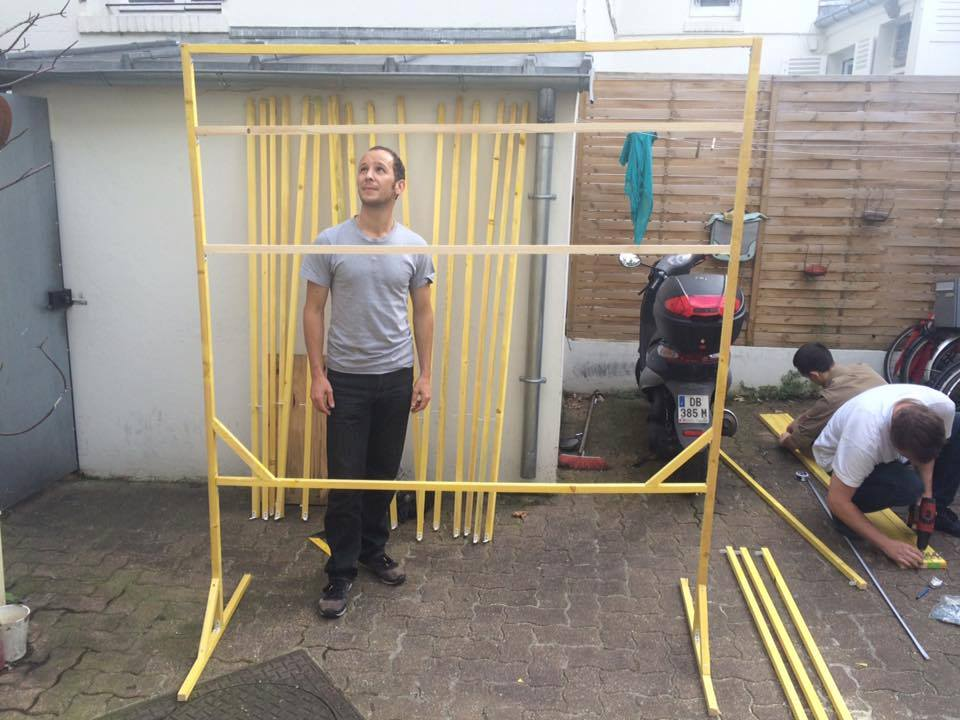
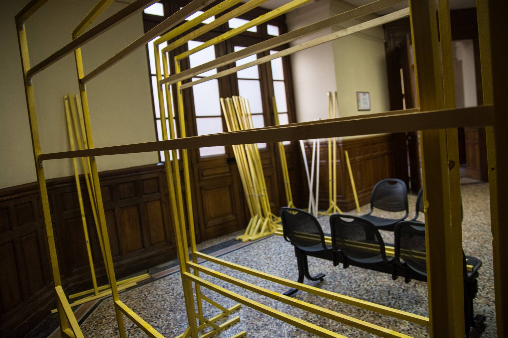
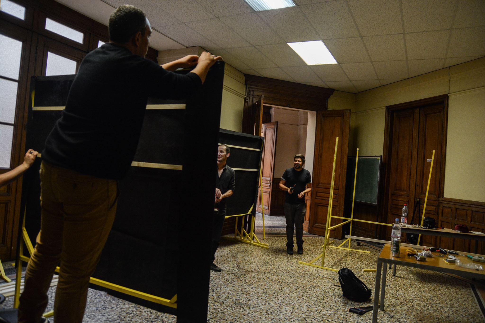
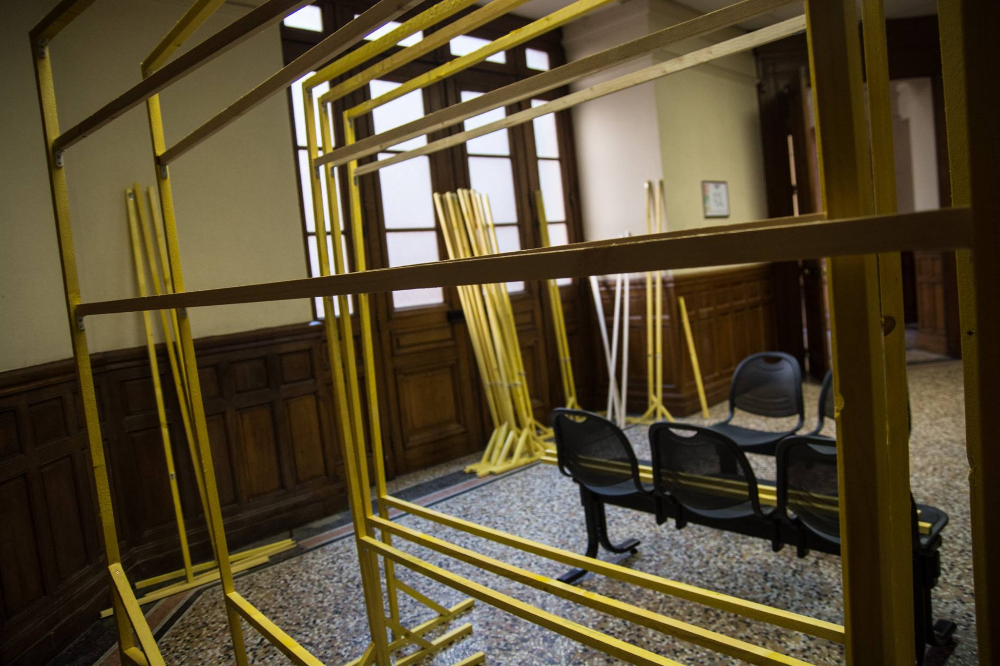
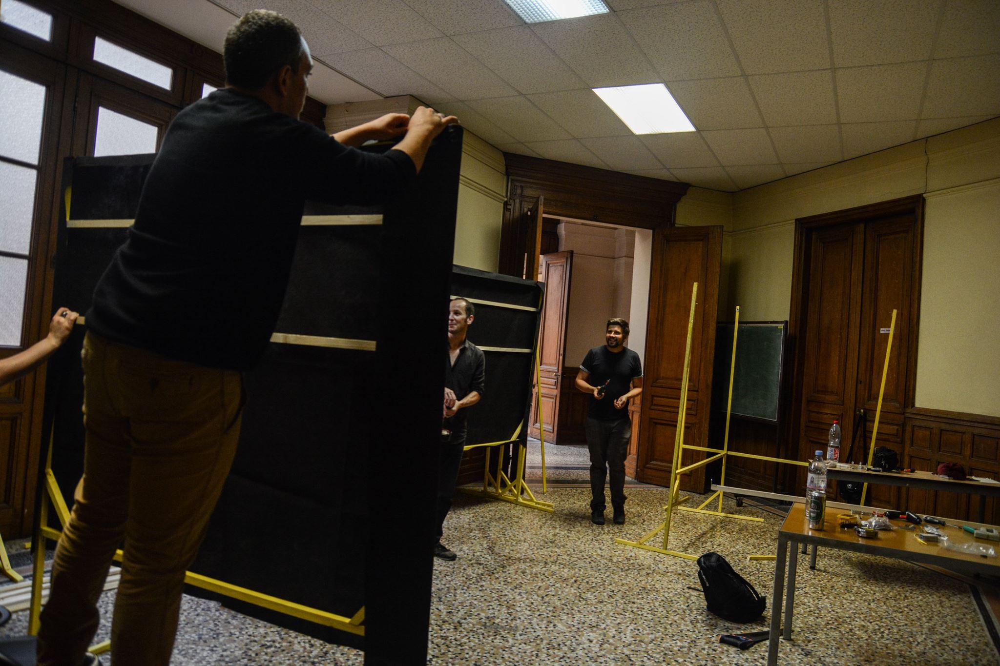
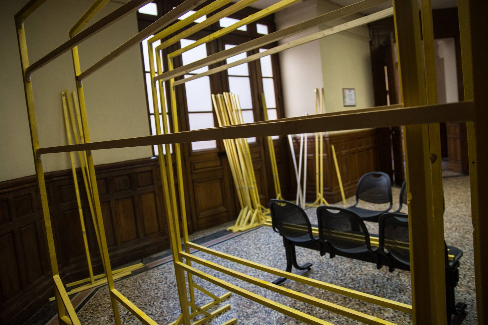
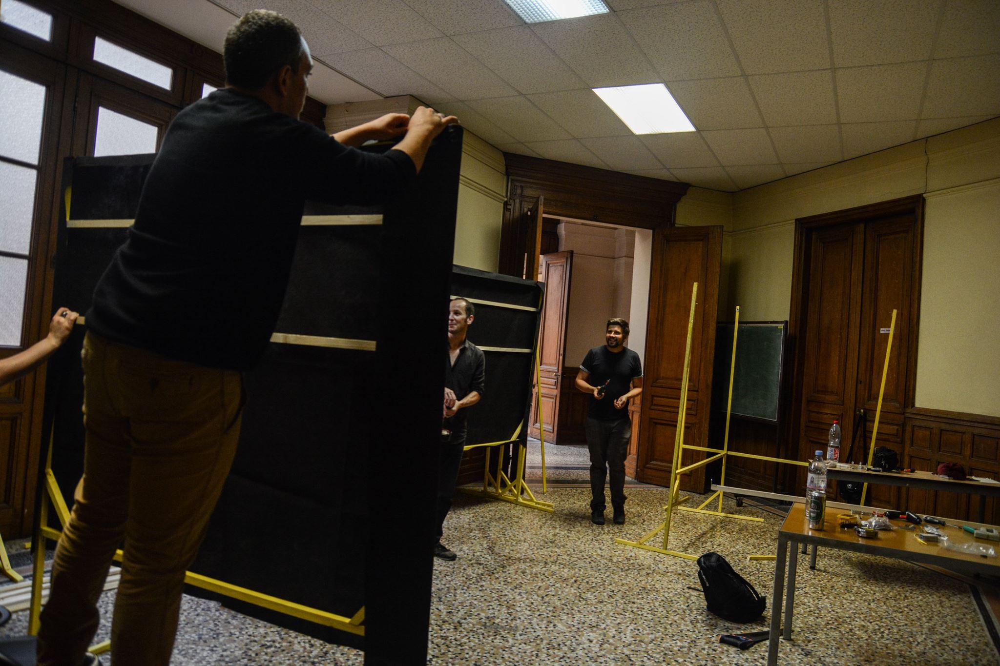

Vous pouvez retrouver toutes les informations relatives à l'exposition sur Facebook.
Vues de photographes : 4 mois de lutte contre la loi travail
Nous sommes dix-sept photographes engagé.e.s avec des statuts, des motivations et des niveaux différents.
Nous nous sommes rencontrés dans les manifestations contre la Loi Travail et nous avons envie de nous retrouver autour de ce projet commun, car toutes et tous ont été nourris par ce mouvement et son engagement.
Alors pour que nos photos ne restent pas sur nos ordinateurs et pour qu’elles reviennent aux actrices et acteurs de ce mouvement, nous avons décidé de réaliser une exposition collective pour les remercier.
Après l’exposition collective à la Bourse du Travail de Paris en septembre 2016 avec trente photographes, une partie des photographies seront présentées du 9 janvier au 6 février 2017 à La Bobine à Grenoble.
Exposition
Grenoble : A partir du 9 janvier 2017 à La Bobine, parc Paul Mistral, 42 boulevard Clémenceau. Vernissage le 9 janvier sur place.
Entrée libre.
Paris : Nous exposions du 25 septembre au 1er octobre à la Bourse du Travail.
Photographes exposant à Grenoble
Arnaud Gastaut, Clemence Drack, Etienne Bordet, Guillaume Salmon, Jean Segura, Lily Manapany, Loscotalos, Louis Rochette, Marin Driguez, Marion Vacca, Martin Noda, Nicolas Vieira, Patrice Gravoin, Paul Roquecave, Seka, Teresa Suarez, Vitalia
Lors de l'exposition de Paris, exposaient avec nous :
Alhil Villalva, Alain Pitton, Arnaud Leclercq, Bsaz, Boite Noire, Davide Weber, Francis Azevedo, Rocky Mattiano, Kra Ken, Maxime Reynié, Nicola Galvagni, Philemon Barbier, Pierre Gautheron, Pierre Raimbault, Vincent Rispe Burret
Pendant ce temps...
Après la Bourse du Travail à Paris, nous déplaçons l'exposition à Grenoble vers un autre lieu ayant eu une certaine importance lors du mouvement social, La Bobine.


Petit retour sur le vernissage du samedi 24 septembre à la Bourse du Travail de Paris au travers de l'oeil de Seka
Photos par Seka
Martin Noda est passé sur France Inter pour parler de nos conditions de travail en tant que photographes et vidéastes lors des manifestations, une entrée en matière intéressante le jour de l'ouverture de l'exposition.
Les panneaux sont montés et prêts pour l'exposition !

 





Photos par Teresa Suarez
L'Humanité a relayé l'invitation à l'exposition sur son site !
Les préparatifs avancent et les tirages sont faits !